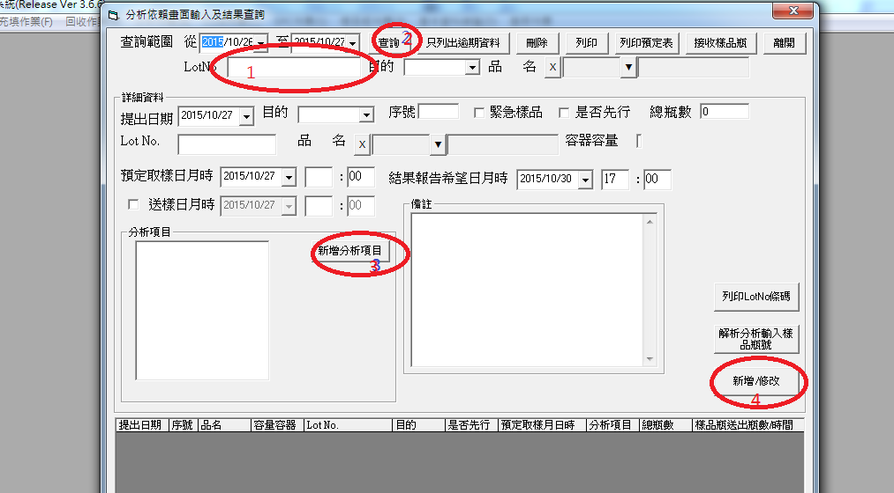
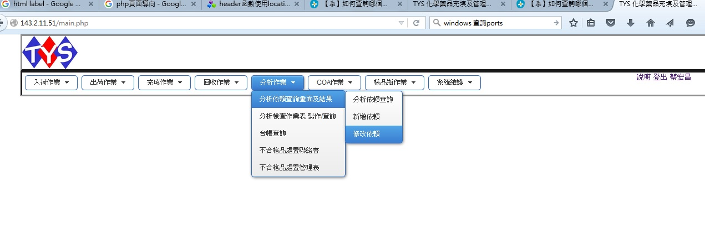
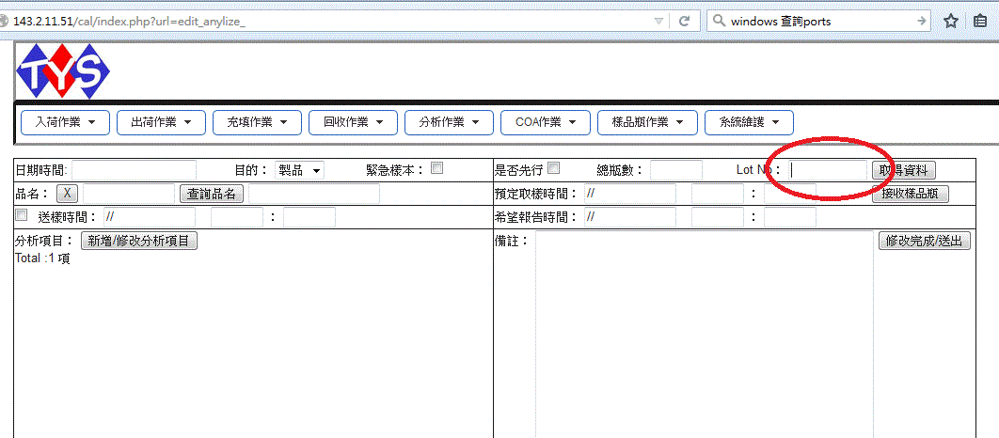
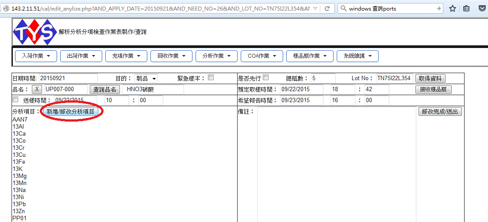
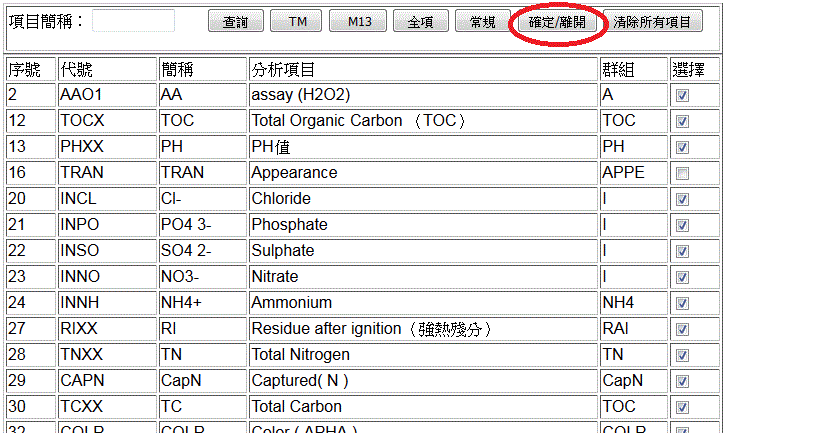
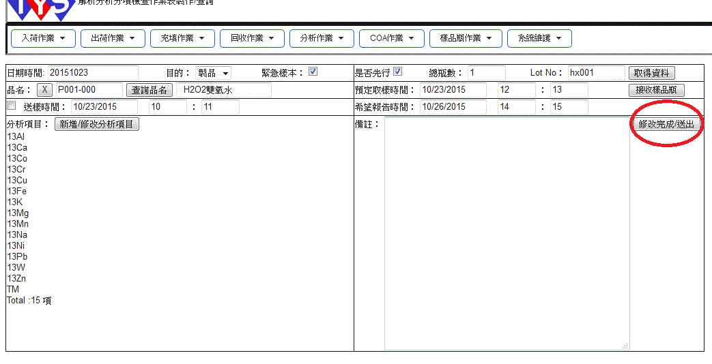

1. 建立/修改依賴：
可由舊的Ver3.66 barcode 修改•

如圖：如果是修改依賴，請依照順序填寫修改分析項目•如果是新增，必須填選品名•
也可由新的barcode 新增:
選擇分析作業-分析依賴查詢畫面及結果-修改依賴

填寫要修改的Lot No，再點選取得資料•

資料列出之後點選"新增/修改分析項目"

進入修改分析項目頁面：這裡只會列出產品相關的測試選項，不屬於此項產品的分析方法不會列出來•
最下方為TM選項，勾選之後點選 "確定/離開"

回到上一個頁面，點選 "修改完成/送出"， 即可完成分析項目修改•
